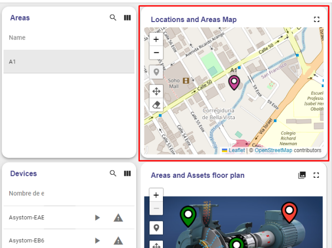
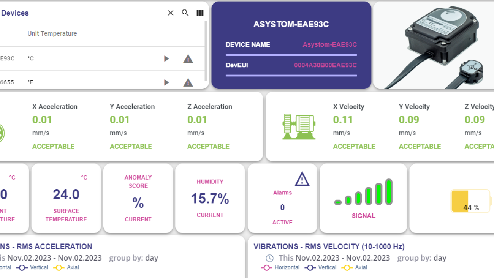

Getting Started with IoTLogIQ
Customer Dashboard
The goal of this tutorial is to demonstrate the basic usage of the
most popularIOTLogIQ’s Main Dashboard.

1-Map Panel
On the top right corner of the dashboard, you can find the map
panel where the user is capable of creating, editing, dragging,
and dropping markers (if permissions enable it).

2- Area and Assets floor pan Panel
When an asset, area, or device is selected, this panel will render
the map/image attached to it along with its respective markers.


-Markers in this section can be edited or removed.
-Additional Markers can be added.
-Image attached can be changed.
3- Device Panel

You can access all information about the devices by clicking on
the Details button inside the panel.
Depending on the device profile, you will be redirected to a
different dashboard with different specifications and graphics
about its measurements.

You can access the alarms for the devices by clicking the alarm
button on the top-left panel.